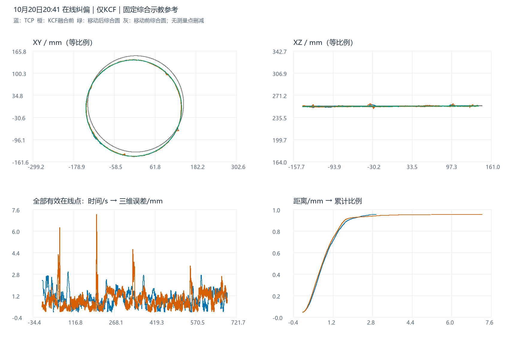

在线纠偏结果分析：仅KCF数据
与移动后综合原始示教的空间误差对比
参考保持一致：此前四组历史示教等权综合的原始示教圆，半径固定 142.035339635 mm。仅按本组原始KCF估计圆心和法线进行刚体移动；不使用本组TCP寻优，不重估综合半径。移动后是事后估计参考，尚非独立真实焊缝测量。
1. 数据范围与实际运行模式
读取用户指定目录，不替换为同日晚间其它会话。机器人记录8,301条、视觉诊断11,663条。TCP筛选 online_running、CORFLAG=1、DETFLAG=1、S_START=1、S_HOLD=0、ALARM=0，保留7,803点；KCF筛选 online_running、result_valid=1，保留11,359点。保留全部有效点，无测量轨迹平滑或峰值剔除。
仅KCF得到日志与数值双重确认：11,359个有效在线视觉点的fusion_applied全部为0；before_fusion与final像素最大差为0，三维重投影最大差也为0。因此最终视觉与原始KCF完全重合，报告补充列出这条重复轨迹用于核查，不把它当成另一种策略。权重字段为空，不将缺失值解释为已记录的0或1。
“未启动在线ICP”的含义需要分开说明：目录名是用户对本组测试的标注；session_summary中的enable_online_icp=true、439批轨迹日志中405批applied=1，记录的是轨迹预测ICP。当前代码OnlineCorrectionExceptionProcessor产生该消息；项目文档明确它与修改仿真工件位姿的在线局部表面点云ICP是不同链路。本报告保留用户对局部ICP关闭的标注，但不把这组数据写成“所有ICP均关闭”，也不根据轨迹批次推断发生过工件位姿写回。
2. 同坐标系的四轨迹三维图
统一到变位机末节随动坐标系（材料系），逐点消除S1/S2旋转；视觉从工具TCP系加回Z=231 mm原点偏置。切换到工具TCP坐标系时只需所有圆心Z减231 mm，半径与距离不变。蓝：TCP，橙：原始KCF，灰色虚线：移动前综合示教，绿：移动后综合示教参考。
提供三维、XY、XZ、YZ视角、两组示教独立切换与Z显示倍率。默认1×等比例；倍率只影响显示，不改变任何坐标和误差。生成W点是此前综合参考的采样，不是本次新实测焊缝。
XYZ方向偏差随时间变化
ΔX、ΔY、ΔZ分别为测量点减去参考圆最近点，用于观察毫米量级局部波动；不是TCP与KCF按同一时刻配对后的差值。最终视觉与KCF重合，默认隐藏重复轨迹。

3. 综合示教来源、移动方式与圆参数
| 历史示教 | W点数 | 拟合半径/mm | 综合权重 |
|---|---|---|---|
| 20230608CHUFENGKOU | 1687 | 140.6477 | 25% |
| 20250606CHUFENGKOU | 1663 | 141.6920 | 25% |
| 20260308CHUFENGKOU | 1355 | 142.0846 | 25% |
| 20260404CHUFENGKOU1 | 1368 | 143.7170 | 25% |
使用同一份已确认的四组综合示教，来源按XYZ几何去重，每组25%；历史W分别进行周向分箱、圆拟合后综合半径。未重新挑选来源或为这批数据调整尺寸。移动将综合圆心、法线对齐原始KCF拟合圆，保持尺度和半径；绕圆法线的相位不可辨识，采用最小旋转。
| 圆 | 圆心X/mm | 圆心Y/mm | 圆心Z/mm | 半径/mm | 单位法线 |
|---|---|---|---|---|---|
| 固定综合原始示教（移动前） | 4.4924 | 8.9094 | 253.9076 | 142.0353 | -0.000832582, 0.001575923, 0.999998412 |
| 移动后综合示教参考 | -1.1617 | -3.6251 | 253.1885 | 142.0353 | -0.002991963, 0.000734043, 0.999995255 |
| TCP 实际轨迹拟合圆 | -1.3128 | -3.7693 | 253.2091 | 141.8817 | -0.003166905, 0.000877849, 0.999994600 |
| KCF 原始检测拟合圆 | -1.1617 | -3.6251 | 253.1885 | 141.6808 | -0.002991963, 0.000734043, 0.999995255 |
| 最终视觉（与KCF相同）拟合圆 | -1.1617 | -3.6251 | 253.1885 | 141.6808 | -0.002991963, 0.000734043, 0.999995255 |
所有参数都在上述末节随动系。移动后中心、法线等于KCF拟合结果是对齐的定义，不能当成独立验证；TCP与KCF拟合圆仅用于描述，不替换它们的原始走势。
4. 主误差结果与计算口径
| 轨迹 | 点数 | 平均/mm | 最大/mm | RMSE/mm | P95/mm | ≤2 mm | ≤3 mm | >3 mm点数 |
|---|---|---|---|---|---|---|---|---|
| TCP 实际轨迹 | 7803 | 0.9373 | 2.9684 | 1.0832 | 1.9296 | 95.67% | 100.00% | 0 |
| KCF 原始检测 | 11359 | 0.9157 | 7.2023 | 1.1063 | 1.7624 | 96.66% | 98.64% | 155 |
| 最终视觉（与KCF相同） | 11359 | 0.9157 | 7.2023 | 1.1063 | 1.7624 | 96.66% | 98.64% | 155 |
c = 移动后综合圆心；n = 单位法线；R = 固定综合半径142.035339635 mm h = (p-c)·n；ρ = ||(p-c)-h n|| e = √((ρ-R)²+h²) 平均 = mean(e)；最大 = max(e)；RMSE = √mean(e²)
与前两份综合示教报告相同，采用点到连续三维综合圆周的解析最短距离，不混用到原单组示教折线、最近采样点或行号配对距离。均值按记录样本加权，不按弧长或时间加权；不评价工具姿态和沿缝时序滞后。3 mm用于描述局部偏离，不擅自定义为工艺合格线。
5. 各轴、径向与离面误差
| 轨迹 | 径向有符号均值/mm | 径向RMSE/mm | 离面有符号均值/mm | 离面RMSE/mm | ΔX RMSE/mm | ΔY RMSE/mm | ΔZ RMSE/mm |
|---|---|---|---|---|---|---|---|
| TCP 实际轨迹 | -0.1475 | 0.9008 | 0.0429 | 0.6016 | 0.7207 | 0.5401 | 0.6019 |
| KCF 原始检测 | -0.3535 | 0.9446 | 0.0086 | 0.5757 | 0.7652 | 0.5535 | 0.5760 |
| 最终视觉（与KCF相同） | -0.3535 | 0.9446 | 0.0086 | 0.5757 | 0.7652 | 0.5535 | 0.5760 |
有符号均值可能正负抵消，整体评价仍使用非负三维距离与RMSE。参考位姿来自KCF，因此整体位置和倾角误差可能被吸收，这些分量不是独立标定误差。
前60秒与后续记录
| 轨迹 | 时段 | 点数 | 平均/mm | RMSE/mm | 最大/mm | >3 mm点数 |
|---|---|---|---|---|---|---|
| TCP 实际轨迹 | 前60秒 | 674 | 1.3965 | 1.5396 | 2.6985 | 0 |
| TCP 实际轨迹 | 60秒以后 | 7129 | 0.8939 | 1.0297 | 2.9684 | 0 |
| KCF 原始检测 | 前60秒 | 922 | 0.8762 | 1.0292 | 4.2536 | 11 |
| KCF 原始检测 | 60秒以后 | 10437 | 0.9192 | 1.1128 | 7.2023 | 144 |
| 最终视觉（与KCF相同） | 前60秒 | 922 | 0.8762 | 1.0292 | 4.2536 | 11 |
| 最终视觉（与KCF相同） | 60秒以后 | 10437 | 0.9192 | 1.1128 | 7.2023 | 144 |
时间从保留轨迹的最早时间起算，不是会话启动时间。完整作业段统计见TCP作业行指标；分析中未删除起始段。
6. KCF局部峰值
TCP无点超过3 mm。原始KCF有155点超过3 mm，占1.365%。事件按相邻记录均超过3 mm归组，相邻记录间隔超过200 ms则拆分；下表最多显示15段，最终视觉事件因与KCF相同不重复展示。
| 轨迹 | 开始 | 结束 | 点数 | 最大/mm | 峰值径向/mm | 峰值离面/mm |
|---|---|---|---|---|---|---|
| KCF 原始检测 | 20:45:07.157 | 20:45:09.269 | 36 | 7.2023 | 6.9182 | 2.0030 |
| KCF 原始检测 | 20:42:50.669 | 20:42:51.956 | 20 | 6.2308 | -4.5983 | -4.2046 |
| KCF 原始检测 | 20:47:22.917 | 20:47:24.204 | 20 | 4.6194 | -1.8241 | 4.2440 |
| KCF 原始检测 | 20:42:45.951 | 20:42:47.535 | 25 | 4.2536 | 1.2543 | 4.0644 |
| KCF 原始检测 | 20:47:26.514 | 20:47:27.801 | 22 | 3.6993 | -3.6959 | 0.1580 |
| KCF 原始检测 | 20:50:56.227 | 20:50:56.294 | 2 | 3.4088 | -1.6084 | 3.0055 |
| KCF 原始检测 | 20:47:28.791 | 20:47:28.824 | 2 | 3.3436 | -3.3359 | -0.2276 |
| KCF 原始检测 | 20:47:27.900 | 20:47:28.263 | 7 | 3.3355 | -3.3346 | -0.0778 |
| KCF 原始检测 | 20:42:45.621 | 20:42:45.719 | 2 | 3.2920 | 0.1164 | 3.2899 |
| KCF 原始检测 | 20:47:26.382 | 20:47:26.382 | 1 | 3.2580 | -3.2267 | 0.4502 |
| KCF 原始检测 | 20:42:50.438 | 20:42:50.438 | 1 | 3.2284 | -2.4773 | -2.0702 |
| KCF 原始检测 | 20:50:56.855 | 20:50:56.887 | 2 | 3.2247 | -1.7853 | 2.6854 |
| KCF 原始检测 | 20:47:28.461 | 20:47:28.626 | 3 | 3.1616 | -3.1432 | -0.3406 |
| KCF 原始检测 | 20:47:25.953 | 20:47:26.085 | 3 | 3.1238 | -2.9600 | 0.9981 |
| KCF 原始检测 | 20:42:45.158 | 20:42:45.225 | 2 | 3.1226 | -0.2736 | 3.1106 |
最大KCF偏离在20:45:08.246，距离7.202 mm，径向分量6.918 mm、离面分量2.003 mm。轨迹只能确认局部偏离，不能单独判断检测跳点、真实焊缝局部形状或状态时效哪一个是原因。TCP未出现同等级峰值，也不能据此反推这些检测偏离已被某个指定机制完全抑制。
7. 轨迹预测ICP证据与模式边界
439批记录均enabled=1、attempted=1，其中405批应用，34批未应用。按每批released_target点到本批raw_pending折线计算，已应用批次最大几何偏离1.279 mm，各批平均偏离的中位数0.117 mm。复算保留在轨迹批次效果表。
该批次几何偏离既不是本报告的TCP焊缝误差，也不是局部表面配准残差；不以矩阵平移列直接当作真实工件位移。这里仅说明轨迹处理链路确实有应用记录，不能证明仿真工件发生SET_POSE写回。用户标注关闭的局部ICP与该记录并不必然冲突。
8. 三组会话同参考口径对比
| 会话 | 轨迹 | 点数 | 平均/mm | 最大/mm | RMSE/mm | ≤3 mm |
|---|---|---|---|---|---|---|
| 10/20 20:41 仅KCF | TCP 实际轨迹 | 7803 | 0.9373 | 2.9684 | 1.0832 | 100.00% |
| 10/20 20:41 仅KCF | KCF 原始检测 | 11359 | 0.9157 | 7.2023 | 1.1063 | 98.64% |
| 10/21 15:23 自动卡尔曼 | TCP 实际轨迹 | 5848 | 0.7838 | 2.5685 | 0.8950 | 100.00% |
| 10/21 15:23 自动卡尔曼 | KCF 原始检测 | 7522 | 0.7677 | 6.4706 | 0.9006 | 99.67% |
| 10/21 16:32 固定0.1/0.9 | TCP 实际轨迹 | 5855 | 0.8479 | 3.8369 | 0.9853 | 99.16% |
| 10/21 16:32 固定0.1/0.9 | KCF 原始检测 | 7597 | 0.7795 | 3.4193 | 0.8864 | 99.93% |
本组TCP平均/RMSE为0.937/1.083 mm，高于10月21日两组，但其最大2.968 mm低于0.1/0.9组的3.837 mm；本组KCF最大7.202 mm大于0.1/0.9组的3.419 mm。这反映平均偏离、极值和执行轨迹之间并不等价。
三组都固定同一综合半径，各自由本组KCF确定参考位姿。它们来自不同日期/时段、状态和观测，不是只改变一个参数的受控实验；不能把差异全部归因于融合策略或局部ICP开关。每组均保留全部有效点，不能用TCP较低峰值掩盖KCF异常。
9. 参考敏感性与解释限制
交错20°扇区留出后，KCF合并RMSE为1.130 mm；有效KCF周向覆盖约357.98°。训练扇区只估计圆心/法线，半径仍固定。该检查降低同点重复拟合评价，但不能消除共享传感器和标定偏差。
| 轨迹 | 留一组示教：平均范围/mm | RMSE范围/mm | 最大范围/mm |
|---|---|---|---|
| TCP 实际轨迹 | 0.936–1.049 | 1.081–1.234 | 2.966–3.252 |
| KCF 原始检测 | 0.904–1.100 | 1.069–1.328 | 6.759–7.742 |
留掉一组历史示教仅用于展示半径来源敏感性，不从中选择更好结果，主参考始终固定。没有本次工件移动后的独立实测焊缝，不能将事后对齐参考称为独立真值；当前标定能复算日志，也不证明历史标定无误。
10. 复核结果与后续建议
原始图像点到固定站系投影最大复算差9.22e-07 mm，末节随动系日志复算最大差8.85e-07 mm；原始KCF与最终视觉像素、三维坐标差均为0。数据哈希、独立标量几何、误差分量、事件计数及图表坐标分别验证，记录见下方附件。
优先回看20:45:08附近的KCF峰值图像与机器人状态；若要比较策略优劣，应在尽量相同工件位置和运行条件下重复采集，并分别统计TCP表现与检测点峰值。判断绝对精度仍需要独立焊缝或工件位姿测量。
报告内含三维和XYZ交互图、离线Plotly依赖及静态预览。复现依次运行本目录analyze.py、build_report.py、verify.py。所有新增文件仅在本目录，原始采集和此前分析均不修改。浏览器采用无鼠标渲染及DOM事件检查；未进行手动拖拽、缩放和平移验收。